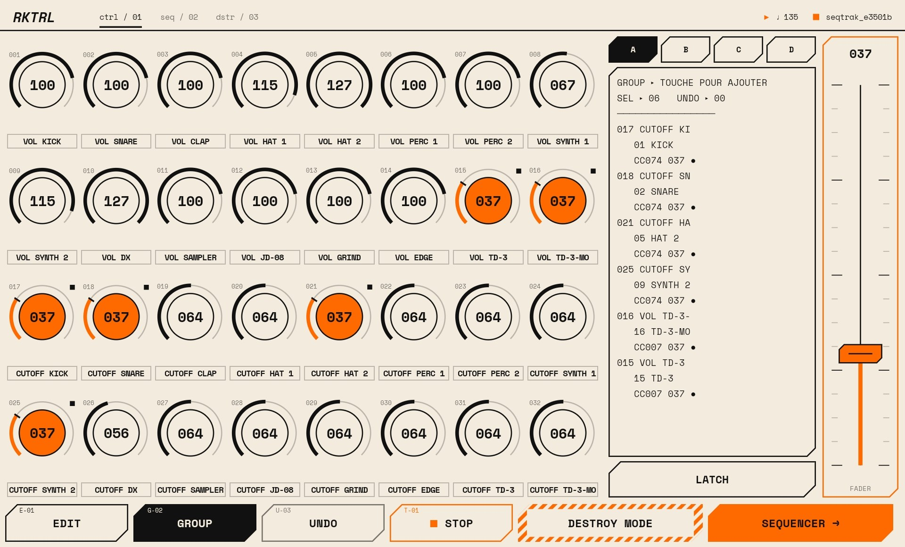
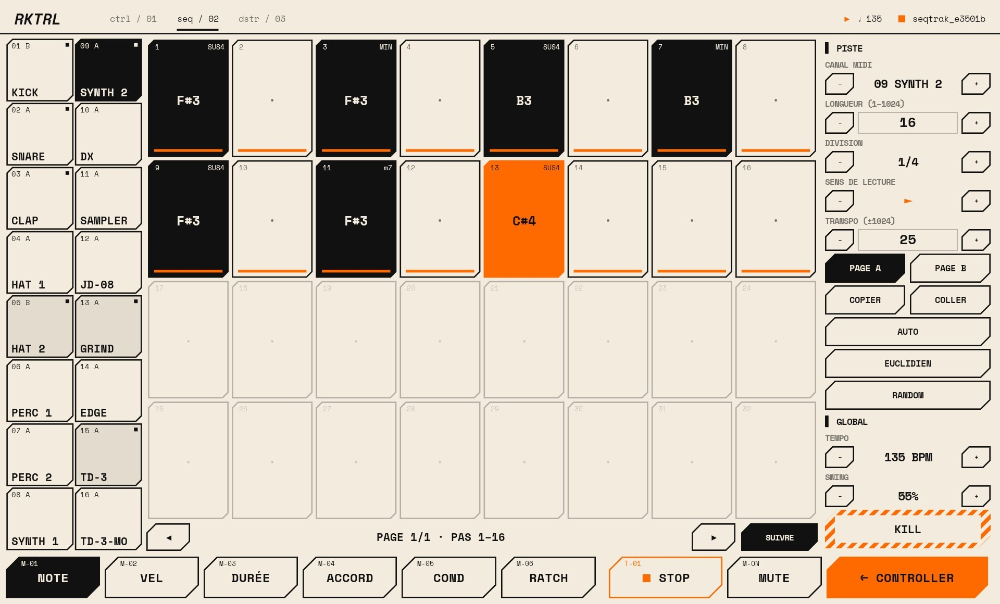
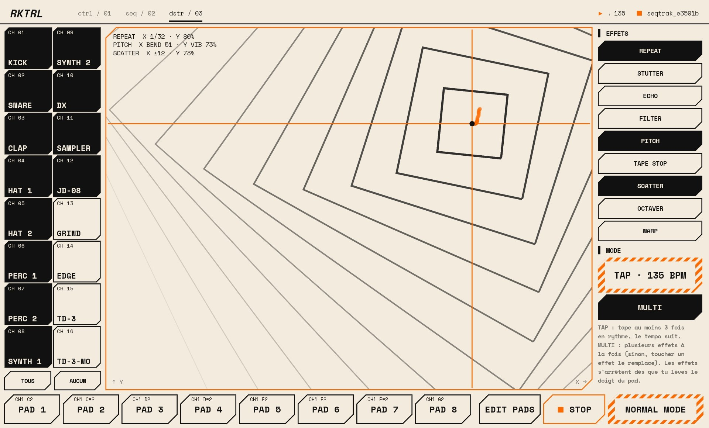

1CTRL
128 assignable CC
4 banks of 32 knobs. Channel, CC and range per knob, one fader with soft takeover — or FORCE to jump straight to the value.
Shape your synths with 128 assignable CC controls, build patterns on a 16-track step sequencer, then tear them apart live in Destroy Mode. Over Bluetooth MIDI or USB.

Each block is a step: the orange one is the playhead.
4 banks of 32 knobs. Channel, CC and range per knob, one fader with soft takeover — or FORCE to jump straight to the value.
Note, velocity, length, chords, trig conditions and ratchets on every step. Pages A / B for live variations.
Generate basslines, acid, pads, riffs, solos… or euclidean rhythms with two combined layers.
Long-press a step for pan, modulation, pitch bend, accent and slide.
An X/Y pad driving 9 live MIDI effects — repeat, stutter, echo, filter, tape stop, warp… — with hypnotic visuals.
8 assignable pads to play any note on any channel, and TAP BPM to lock the tempo by ear.
Connect wireless BLE-MIDI gear or plug in over USB. MIDI clock out included.
Back up your whole setup to a file, name your MIDI channels, pick your background and accent colours.


Tap Download APK on your Android phone or tablet.
If Android asks, allow your browser or file manager to install apps from this source.
Tap the link area at the top right to connect your Bluetooth or USB MIDI gear.
Free download · latest Android release.